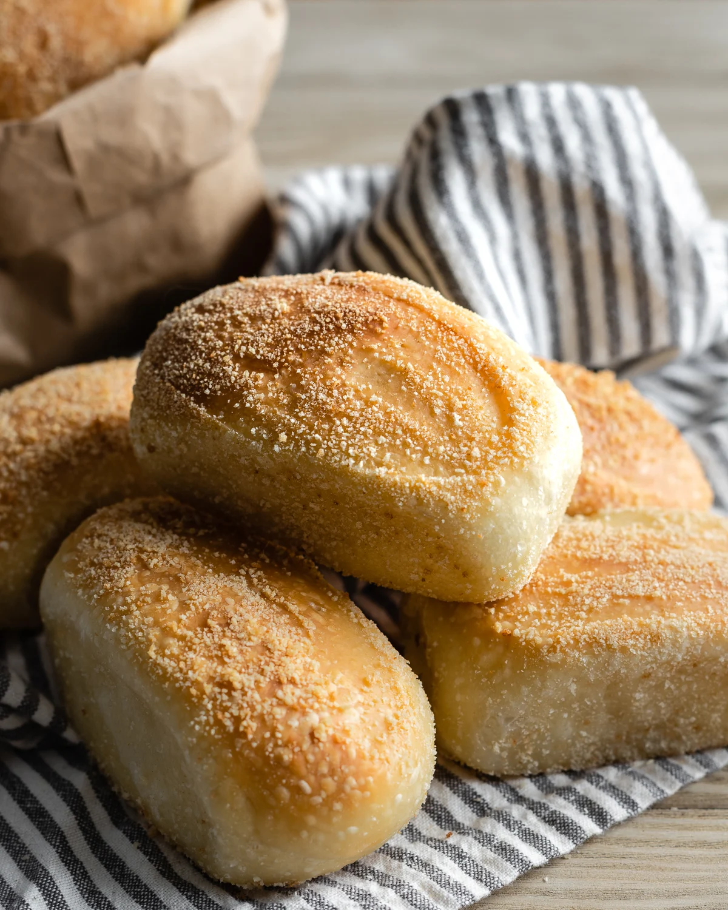

Pandesal is a popular bread roll from the Philippines. Its name is derived from the Spanish words "pan de sal," which translates to "bread of salt." However, despite its name, pandesal is characteristically slightly sweet rather than salty. The outside is usually coated in fine breadcrumbs which give it a unique texture.
Meal prep time : 1 hour 45 minutes
Servings : 8